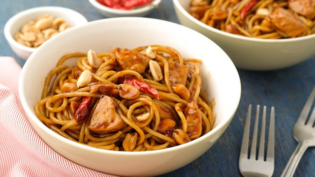

Back to Home
Charlie Chan

Description
A popular Filipino-Chinese inspired stir-fried noodle dish tossed in a sweet, savory, and slightly spicy sauce with chicken, shiitake mushrooms, and roasted peanuts.
Ingredients
- 500g spaghetti noodles
- 500g chicken breast or thigh, cut into strips
- 1 cup shiitake mushrooms, sliced
- 1/2 cup peanuts, roasted
- 3 cloves garlic, minced
- 1 onion, chopped
- 1/4 cup oyster sauce
- 1/4 cup soy sauce
- 2 tablespoons peanut butter
- 1 tablespoon brown sugar
- 1 table spoon of chili flakes, or to taste
- 1 table spoon of sesame oil
- Water as needed.
- Cooking oil
- Green onions, chopped (for garnish)
Steps
Prepare the Noodles
- Cook the spaghetti noodles according to package directions until al dente. Drain and set aside.
Prepare the Chicken
- In a bowl, season the chicken strips with soy sauce and a little cornstarch.
- Heat cooking oil in a large pan or wok.
- Sauté the chicken until cooked through. Remove and set aside.
Sauté Aromatics and Mushrooms
- In the same pan, sauté the garlic and onion until fragrant.
- Add the shiitake mushrooms and cook until softened.
Make the Sauce
- In a separate bowl, combine the oyster sauce, soy sauce, peanut butter, brown sugar, chili flakes, and sesame oil.
- Add a little water to thin the sauce.
- Add the sauce to the pan with the mushrooms, and stir to combine.
Combine and Serve
- Add the cooked chicken and spaghetti noodles to the pan.
- Toss everything together until the noodles are evenly coated with the sauce.
- Add the roasted peanuts and toss again.
- Garnish with chopped green onions.
- Serve hot.